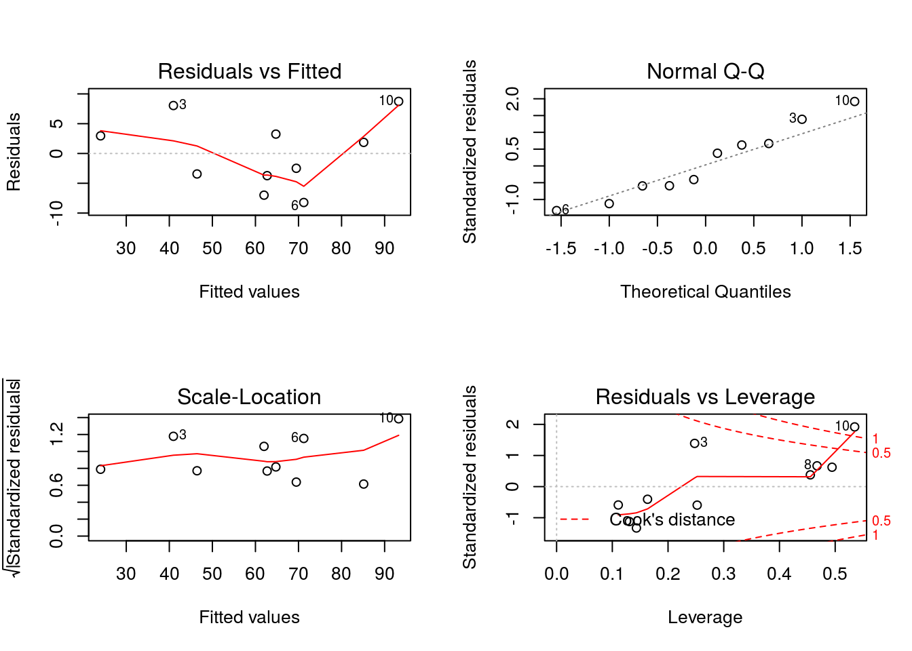

回帰分析の評価方法
重回帰分析
# 演習のデータを変形せずに読み込み、分析用データフレームに変換する
file <- "./data/ex4_4.csv"
x <- read.csv(file, header = TRUE, sep = ",", fileEncoding = "CP932")
result.lm <- x %>%
lm(bugs ~ kloc + m.hour, data = .)
summary(result.lm)##
## Call:
## lm(formula = bugs ~ kloc + m.hour, data = .)
##
## Residuals:
## Min 1Q Median 3Q Max
## -8.2244 -3.6497 -0.3115 3.1793 8.7418
##
## Coefficients:
## Estimate Std. Error t value Pr(>|t|)
## (Intercept) 27.9031 8.5614 3.259 0.0139 *
## kloc 1.2804 0.1419 9.023 4.19e-05 ***
## m.hour -1.7392 0.5408 -3.216 0.0147 *
## ---
## Signif. codes: 0 '***' 0.001 '**' 0.01 '*' 0.05 '.' 0.1 ' ' 1
##
## Residual standard error: 6.68 on 7 degrees of freedom
## Multiple R-squared: 0.9238, Adjusted R-squared: 0.902
## F-statistic: 42.44 on 2 and 7 DF, p-value: 0.0001221基本的診断プロット
ネット上の回帰分析の解説ではあまり触れられることがないのですが、回帰モデルをより詳しく確認(診断)するにはplot {graphics}関数でlm {stats}関数の計算結果に対する基本的診断プロットを行います。
oldpar <- par()
par(mfrow = c(2, 2))
plot(result.lm)
par(oldpar)Rcmdrの場合
Rcmdrを使う場合は［モデル］-［グラフ］-［基本的診断プロット］を実行して下さい。

基本的診断プロット
基本的診断プロットの見かた
基本的診断プロットは回帰診断に使う予測値や残差等をプロットしたグラフの集合で回帰分析の結果(残差)を視覚的に確認できます。各グラフの解説はRで線形単回帰分析や里洋平氏のブログ、里洋平氏のブログを参考にしています。
oldpar <- par()
par(mfrow = c(2, 2))
plot(result.lm)
par(oldpar)Residuals vs Fitted
左上にあるこのグラフは残差の全体像を確認するためのグラフです。横軸が予測値(Fitted valuse)、縦軸が残差(Residuals)になっています。
Normal Q-Q
右上にあるこのグラフは残差が正規分布に従っているかを確認するためのグラフです。黒点線の直線に沿っていれば概ね正規分布に従っていると言えます。
回帰分析においては残差が(標準)正規分布に従うと過程しているため残差が直線的に並ぶ程、モデルとしては良いと判断できます。今回のケースでは残差は概ね正規分布に従っていると判断できます。
Scale-Location
左下にあるこのグラフは残差の変動状況を考察するためのグラフです。横軸が予測値(Fitted valuse)、縦軸が標準化した残差(Standardized residuals)の平方根になっています。
Residual vs Leverage
右下にあるこのグラフは各データがモデルの当てはまり具合にどの程度影響があるかを測るためのグラフです。横軸はてこ値(Leverage)、縦軸が標準化した残差(Standardized residuals)になっています。
てこ値(Leverage)が大きい程、モデルの当てはまりがよく、赤点線で示されているクックの距離(Cook’s distance)が0.5を超えると影響力があり、1を超えると特異的な影響力があると見なされます。今回のケースではModule10のデータが回帰モデルに大きな影響を与えていると判断できます。